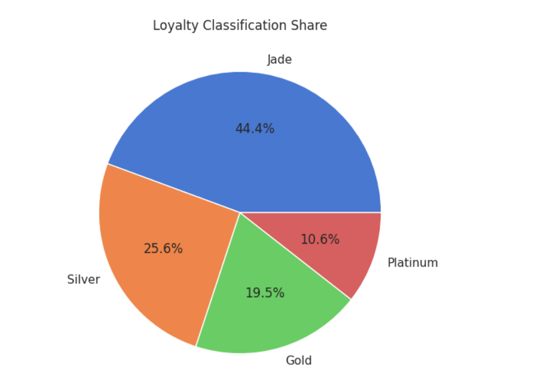
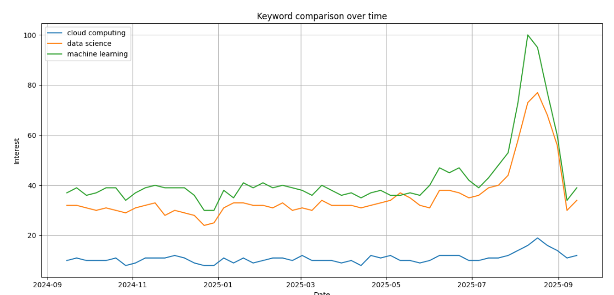
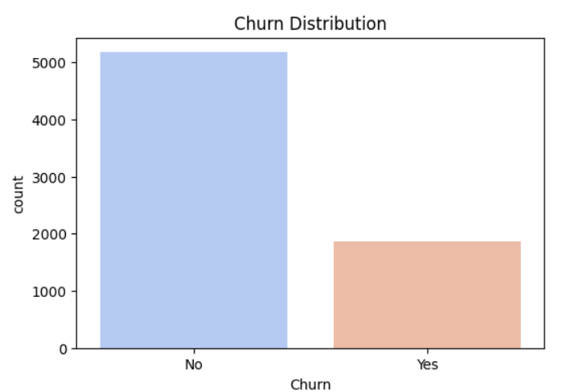

SQL | Python | Power BI | Excel
Turning Raw Data into Business Insights
I am Atul Yadav, an aspiring Data Analyst with skills in SQL, Python, Power BI, and Excel. I enjoy analyzing data, uncovering meaningful insights, and creating interactive dashboards that help businesses make data-driven decisions. I am continuously learning and building projects to strengthen my analytical and problem-solving skills.
B.Tech Graduate
System Engineer at Flipkart
Helping businesses make data-driven decisions.
Tools and technologies I use to analyze data and create business insights.
Database querying, joins, CTEs and analysis.
Pandas, NumPy, Matplotlib and data analysis.
Interactive dashboards and business reports.
Pivot Tables, Charts and Advanced Formulas.
Data cleaning, transformation and exploration.
Version control and project hosting.
Projects Completed
Skills Mastered
Hours of Learning
Here are some of my Data Analytics projects.

Analyzed bank data using SQL, Python and Power BI to identify trends and improve business decisions.

Created a dashboard to analyze employee attrition and workforce trends using Power BI.

Built a churn prediction model using Python, SQL,Pandas and data visualization.
I'm open to Data Analyst opportunities, freelance projects, and collaborations.